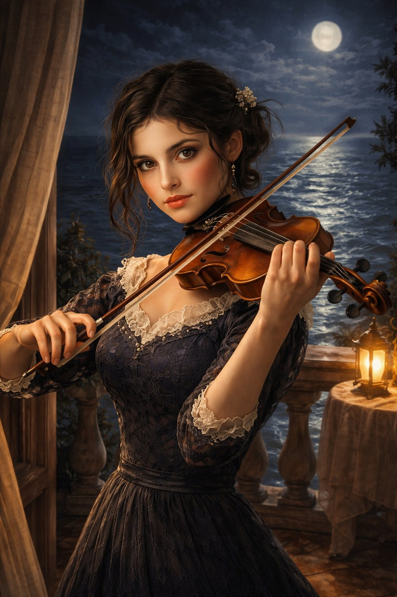
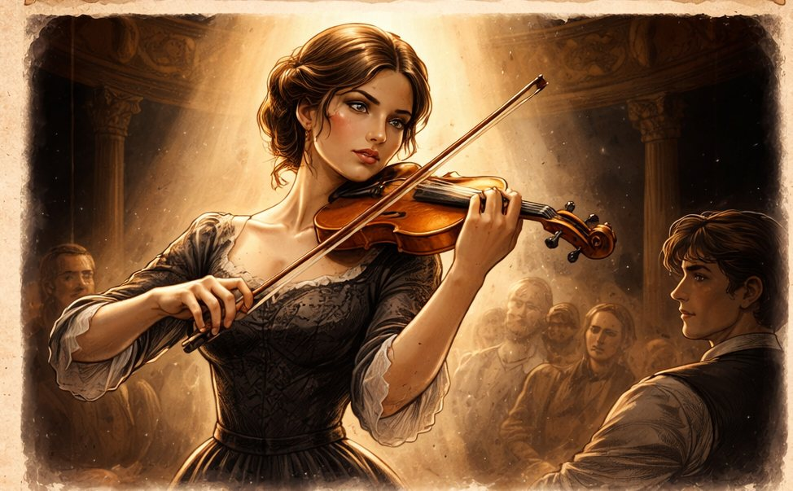

Temi principali
Fuga, identità, desiderio, gelosia, arte e redenzione: ogni capitolo aggiunge una nuova sfumatura al conflitto interiore dei personaggi.
Una storia di identità rubate, fughe, desiderio e occasioni pericolose. Tra il mare di Malaga, la tensione del passato e il fascino del violino d’oro, Ladro di cuori 2 segue personaggi costretti a scegliere tra amore, libertà e rovina.

Il romanzo unisce atmosfera mediterranea, tensione criminale e un intreccio sentimentale che cambia volto a ogni capitolo. I protagonisti cercano una via di salvezza, ma ogni incontro riapre il passato e rende il futuro ancora più incerto.
Fuga, identità, desiderio, gelosia, arte e redenzione: ogni capitolo aggiunge una nuova sfumatura al conflitto interiore dei personaggi.
Al centro del romanzo brillano il violino d’oro, il richiamo del rischio e la domanda che accompagna Alessio e Laura: si può davvero sfuggire a ciò che si è stati?
L’amore non porta solo conforto. In questa storia diventa dubbio, prova, ferita e talvolta sacrificio.

A Malaga, la quiete della fuga si incrina quando il passato ricompare sotto forma di una proposta impossibile da ignorare.

Il fascino del violino d’oro trascina i personaggi più vicino al pericolo, dove seduzione e interesse si intrecciano.

Una scelta decisiva ridefinisce alleanze, paure e desideri, aprendo la strada a conseguenze imprevedibili.

Nel Bar La Luna, sguardi, sospetti e parole non dette trasformano una serata in un passaggio cruciale della storia.

La gelosia si insinua tra musica e silenzi, rendendo più fragile l’equilibrio tra i protagonisti.

Il concorso e l’ombra di Don Salvatore alzano la posta, tra ambizione, minaccia e promesse di salvezza.

Ipnosi, ferite del cuore e verità nascoste fanno emergere il lato più inquieto e vulnerabile dei personaggi.

La serata fatale trascina tutti verso un punto di non ritorno, dove ogni gesto può cambiare il destino.

Nella fuga e nel tradimento, amore e sopravvivenza smettono di procedere nella stessa direzione.
Il violino dell’addio chiude il cerchio con un incontro inatteso, un dono impossibile e una separazione che lascia il segno.
Immagini che accompagnano il tono del romanzo: eleganza, inquietudine, desiderio e la bellezza fragile di una libertà sempre minacciata.